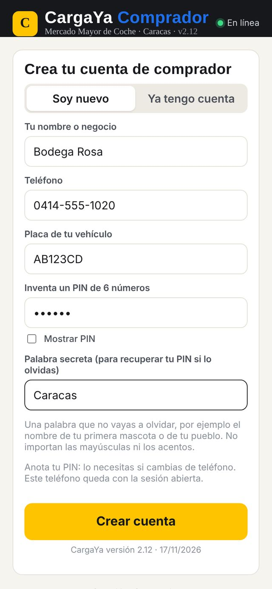
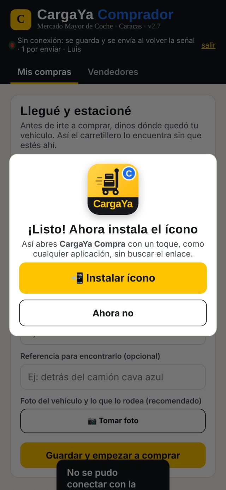
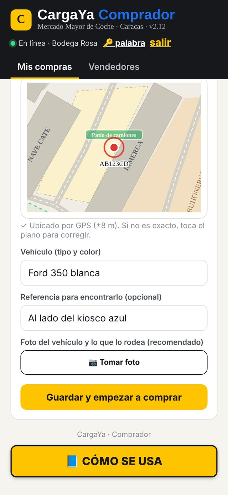
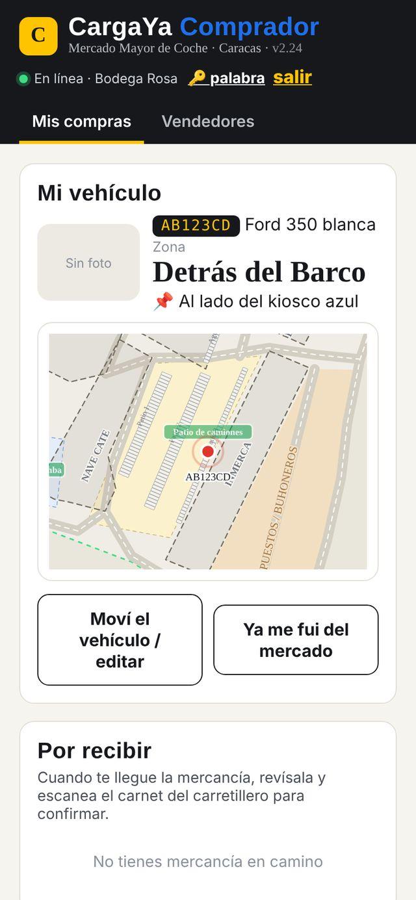
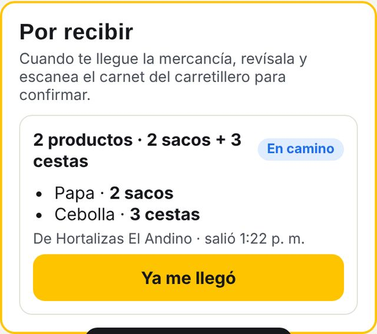
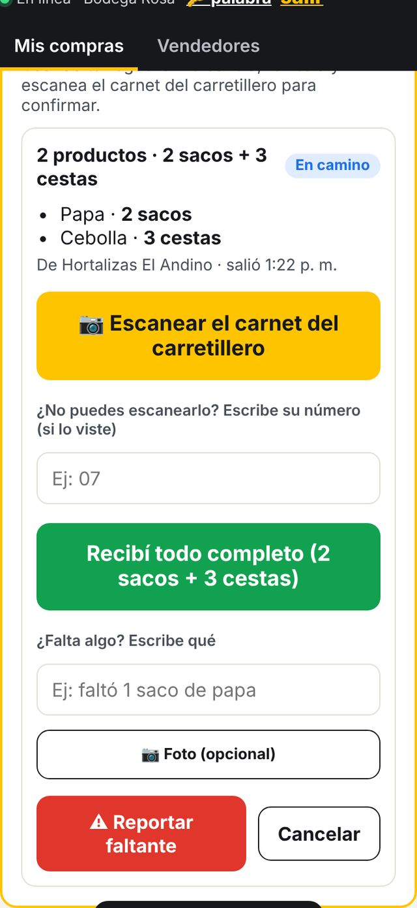
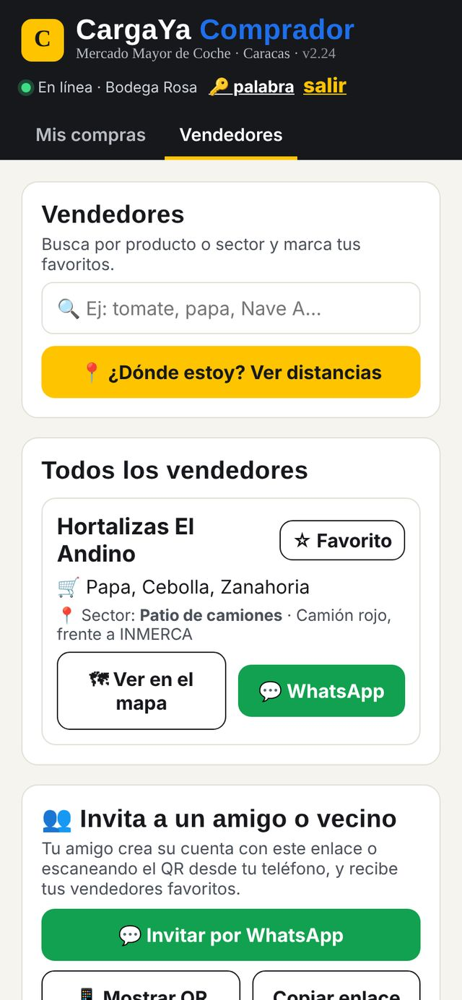
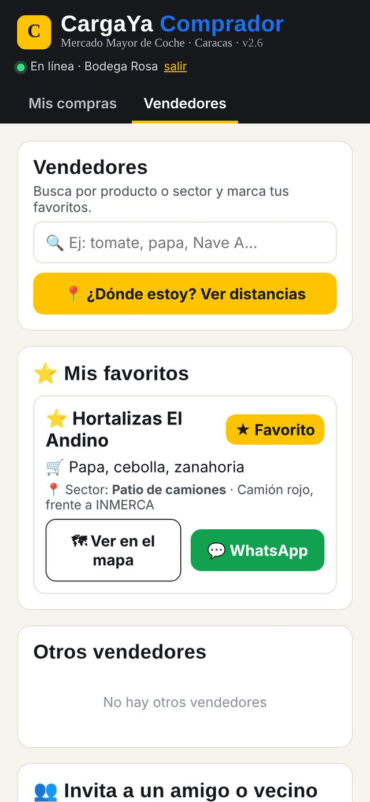
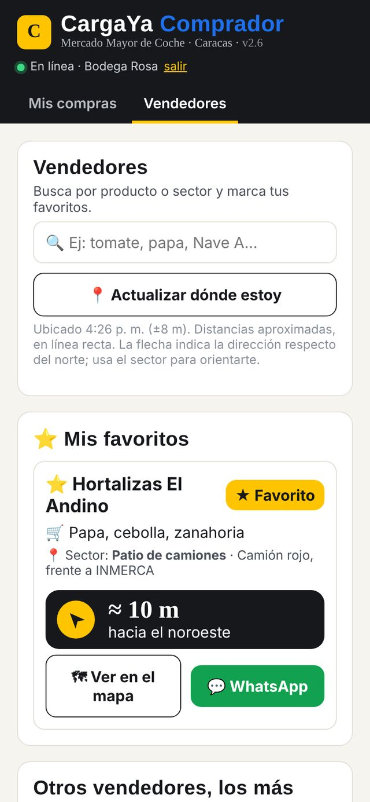
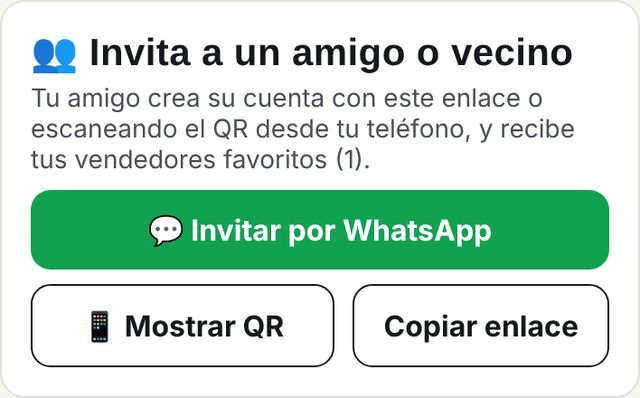

Con CargaYa Comprador tus compras llegan a tu vehículo, ubicas a tus vendedores y confirmas cada entrega. Sigue estos pasos:
1Crea tu cuenta
- Abre el enlace o escanea el QR de CargaYa Comprador.
- Toca Soy nuevo.
- Escribe tu nombre, tu teléfono, la placa de tu vehículo e inventa un PIN de 6 números.
- Elige tu palabra secreta (por ejemplo, el nombre de tu primera mascota).
- Toca Crear cuenta.
💡 Anota tu PIN. Si lo olvidas: toca Ya tengo cuenta → 🔑 ¿Olvidaste tu PIN?, escribe tu teléfono y tu palabra secreta, y elige un PIN nuevo. Puedes cambiar la palabra cuando quieras tocando 🔑 palabra arriba.

2Instala el ícono en tu teléfono
- Al terminar el registro aparece “¡Listo! Ahora instala el ícono”.
- Toca Instalar ícono y luego Instalar.
- Desde ahora abres CargaYa con el ícono “CargaYa Compra”.
💡 En iPhone: en Safari toca Compartir → Agregar a pantalla de inicio.

3Llegué y estacioné
- Cada vez que llegas al mercado, elige la zona donde estacionaste.
- Marca el lugar exacto con 📡 Usar mi GPS o 🗺 Marcar en el plano (si no es exacto, toca el plano para corregir).
- Escribe tu vehículo (tipo y color) y una referencia. Una foto ayuda mucho.
- Toca Guardar y empezar a comprar.


4Tu vehículo y tus compras
- En Mis compras ves tu vehículo en el plano y la mercancía Por recibir.
- Si te mueves, toca Moví el vehículo y marca el lugar nuevo.
- Al irte, toca Ya me fui del mercado.

5Recibe y confirma la mercancía
- Cuando el vendedor despacha, aparece En camino con lo que te mandó.
- Al llegar el carretillero, revisa la mercancía y toca Ya me llegó.
- Toca Escanear el carnet del carretillero (o escribe su número).
- Toca Recibí … bultos completos. Si falta algo, escríbelo y toca Reportar faltante.
💡 El vendedor ve tu confirmación al instante.


6Encuentra a tus vendedores
- Entra a Vendedores. Busca por producto (ej: tomate) o por sector.
- Toca Favorito para tenerlos siempre arriba.
- Toca ¿Dónde estoy? Ver distancias para ver a cuántos metros y hacia dónde está cada uno.
- Ver en el mapa muestra su puesto; WhatsApp le escribe.



7Invita a un amigo o vecino
- En Vendedores, al final, tarjeta Invita a un amigo o vecino.
- Envíale el enlace por WhatsApp o muéstrale el QR.
- Tu amigo recibe tus vendedores favoritos.
